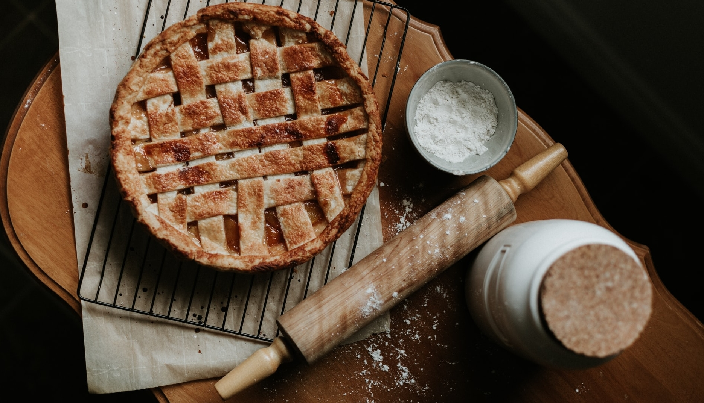

Learn how to create a stunning lattice pie crust with this helpful information and easy video tutorial.
Latticing pie dough is much easier than it looks!

YIELDS1 Serving
PREP TIME45 minutes
COOK TIMENone
TOTAL TIME45 minutes
Ingredients
Instructions
1
Make dough in advance: Prepare pie dough through step 5. Chill in the refrigerator
overnight.
2
After you roll out the bottom crust and fill your pie, it’s time to lattice. On a lightly floured
surface with a floured rolling pin, roll out top pie crust into a 12-inch circle. It’s ok if it’s not a
perfect circle, as long as it’s 12 inches in diameter.
3
Cut dough into strips. To keep things simple, I recommend 12 1-inch strips.
4
Lay 6 strips vertically and evenly spaced on top of the filled pie. Use the longer strips in the center
of the pie and the shorter strips on the ends.
5
Fold every other strip (3 in total) all the way back so they’re almost falling off of the pie. Lay one
of the 6 unused strips perpendicular on top. Unfold the 3 vertical strips back so they lay over the
perpendicular strip. You have 5 strips left.
6
Fold the other 3 vertical strips back. Lay one of the 5 unused strips perpendicular on top. Unfold the 3
vertical strips back so they lay over the perpendicular strip. You’re now beginning to see the beautiful
woven pattern!
7
Repeat with last 4 strips, weaving the strips over and under one another.
8
Fold the excess dough that lays over the edges of the pie back and pinch them with the bottom pie crust
to seal. Flute the edges of the pie, then brush with egg wash and sprinkle with a little coarse sugar.
This adds a lovely sparkle and crunch!
9
Refrigerate unbaked pie for 30 minutes prior to baking. This is an often overlooked step, but cold dough
is guaranteed to hold the lattice shape.
10
Bake the pie as directed in your recipe. I recommend my deep dish apple pie.